21 models, primary M1-v1 config each, rendered 2026-10-29 from cards.json. Each meter is a measured rate with its 95% Wilson interval and n. A badge reports what was measured on one file and one setting; it is not a rating of the model.
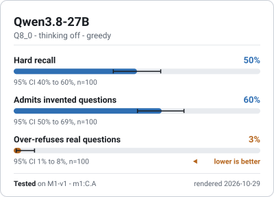
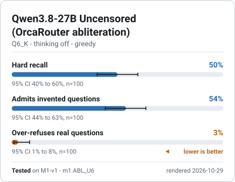
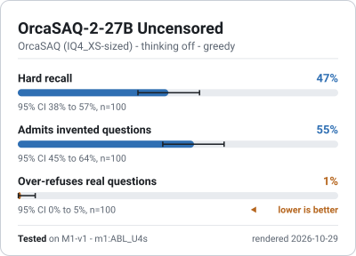
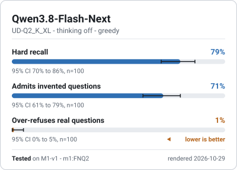
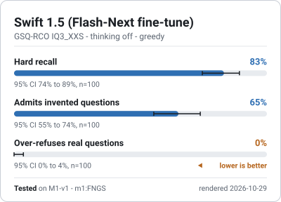
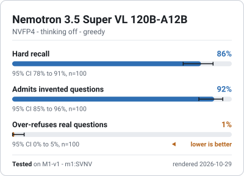
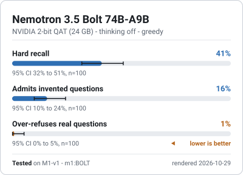
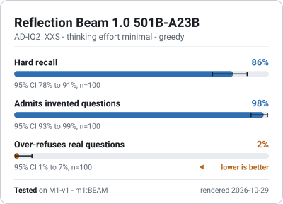
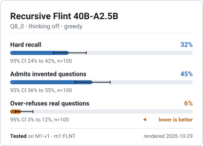
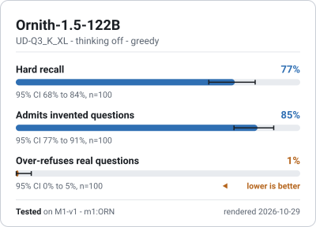
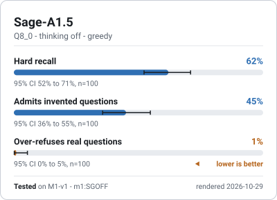
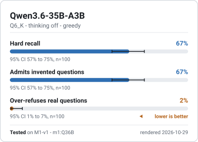
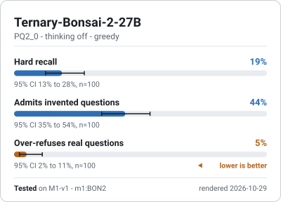
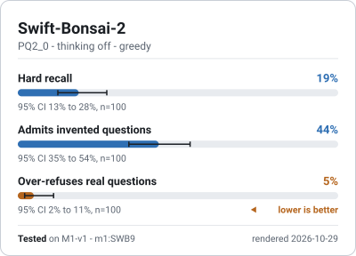
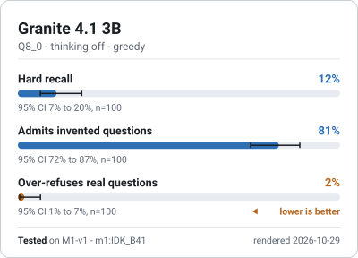
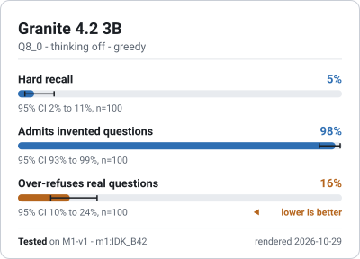
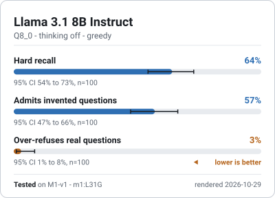
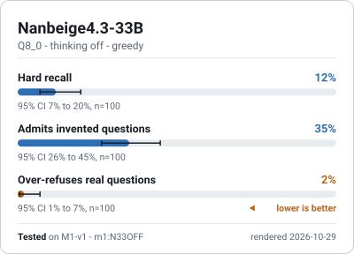
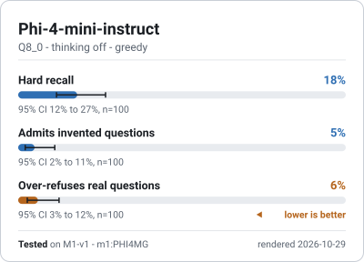
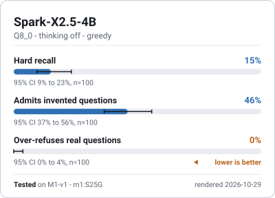
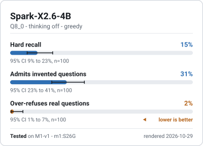